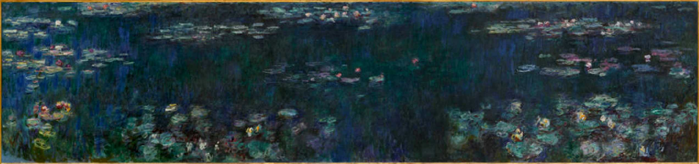
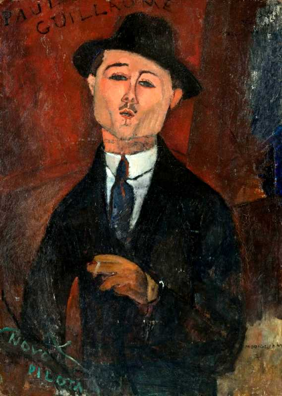
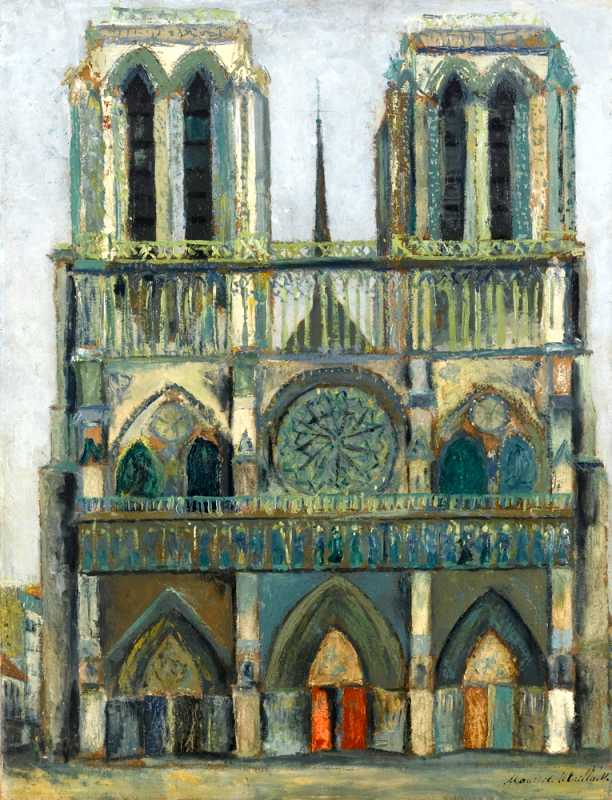

Monet Les Nymphéas Reflets verts Musée de l'Orangerie
オランジュリー美術館 モネ:睡蓮:緑の反映

Modigliani Paul Guillaume Novo Pilota 1915
モディリアーニ:ポールギヨームの肖像

Utrillo Notre Dame 1909
ユトリロ:ノートルダム寺院
March 31 2014 Place de la concorde